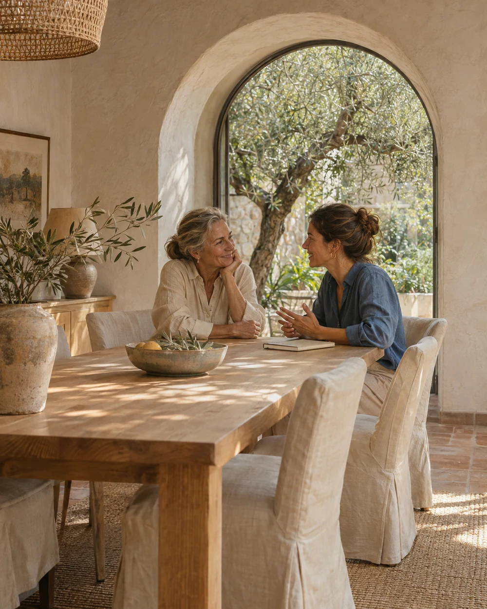

Guía y simulador
Vivienda y coste de vida
Explora los costes de la vivienda y su relación con el presupuesto familiar.
Explorar viviendaPatrimonio
Un hogar, una nueva etapa, el futuro de tu familia. Comprende las piezas de tu patrimonio y cómo se relacionan.
Ver las áreas de PatrimonioLa vida cambia. Las preguntas también.

Vivienda, jubilación, impuestos y planificación. Elige una guía o un simulador para empezar.
Guía y simulador
Explora los costes de la vivienda y su relación con el presupuesto familiar.
Explorar viviendaGuías y simulador
Comprende los ingresos futuros y cómo cambian los escenarios bajo distintos supuestos.
Explorar jubilaciónGuías y herramientas
Fiscalidad del ahorro, calendario fiscal, sucesiones y donaciones explicados con claridad.
Comprender los impuestosGuía educativa
Relaciona las piezas de la economía familiar y las preguntas que surgen al mirar a largo plazo.
Leer la guíaUna simulación permite ver qué cambia cuando cambian los supuestos. Es una forma de explorar escenarios, con sus fuentes y sus límites a la vista.
Conocer la metodología